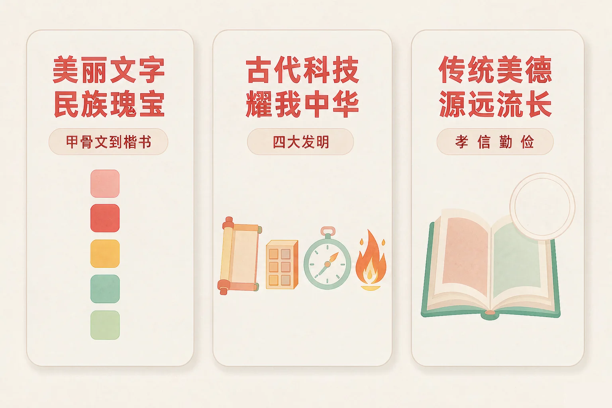
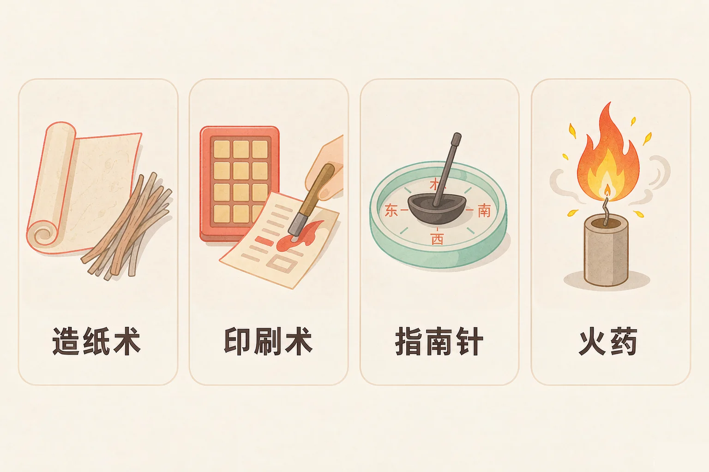
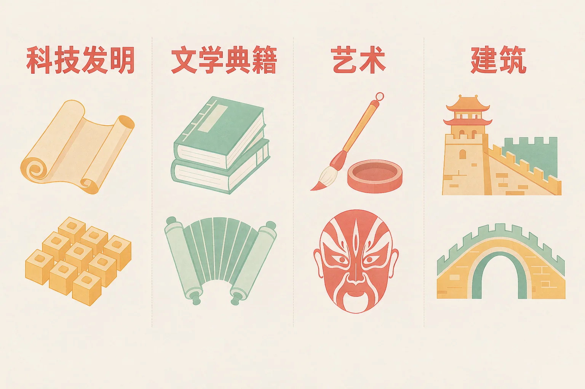

Gallery
v1.0.0 · skill v7.22.0
小学五年级 · 中华优秀传统文化
祖先留下的东西，凭什么让我们今天还在用、还在讲？

选一个你真正好奇的问题，后面的活动都会围着它转。
选择或输入后，这节课会围绕你的问题展开。
先凭直觉选一个，选完立刻看到解释——错了也没关系，正好知道要重点听哪里。
1. 关于汉字，下面哪句话说得准确？
汉字是世界上最古老的文字之一，也是目前世界上仍在使用的最古老的文字，从甲骨文一路演变到今天。错因提醒：常见错误是误认为汉字从没变过——把甲骨文和楷书放在一起看看，就知道它一直在变。
2. 我国古代的四大发明指的是：
四大发明是造纸术、印刷术、指南针和火药。错因提醒：容易把我国其他同样有名的物产（丝绸、瓷器、茶叶）和四大发明搞混；四大发明说的是四项技术。
3. 关于中华优秀传统文化，下面哪句话说得准确？
中华文化是各民族共同创造的：布达拉宫融合了藏汉建筑艺术，敦煌莫高窟的彩塑壁画里也有各民族交流的痕迹。错因提醒：有的同学误认为传统文化就是「老古董」——传统美德今天依然是我们做人的根本。
为什么要学这一课？
我们每天都在写字、读诗、过节，用的是祖先传下来的语言和文字（And）；可要问「汉字是怎么走到今天的、祖先留下了哪些了不起的东西」，很多同学只能说出零碎的名字（But）；所以这节课把文字的来路、古代成就和传下来的道理理清楚，让自豪有依据（Therefore）。
汉字是世界上古老的文字之一，也是目前世界上仍在使用的最古老的文字。别的古文字大多已不再使用，汉字却从几千年前一路写到了今天。
三件值得记一记的事
① 我们写的字大多是形声字——一部分表意、一部分表音，这类字占汉字的大多数。② 书法成为一门艺术，东晋王羲之的《兰亭集序》被誉为「天下第一行书」，写字用的笔、墨、纸、砚被称为「文房四宝」。③ 汉字传到周边国家，对那里的文字和文化产生了影响。

有的同学误认为汉字是别人发明的、后来才传给我们，也有的同学误认为汉字从古到今一个样子。汉字是中华民族在生产生活中一点一点创造出来的，而且一直在变——只是变得有迹可循。
🔍 深层理解 换个角度再看一遍这件事，看看能不能说出背后的原理。
看见它：同一个「水」字，刻在甲骨上像一条弯曲的河，写在小篆里像一束流动的线，落在楷书里成了方方正正的四笔——三千年，同一条河。
解释它：为什么汉字能一直用下来？因为它一直在跟着生活变：字变简单了、写起来快了，但表意的根没断。一种文字能被几千人接着用，靠的就是「好用」。
迁移它：这套眼光也可以用在别处：一样东西能不能传下去，不看它多古老，看它今天还有没有人需要、还有没有人在改进。
先在左边点一张成就卡，再点右侧它该去的分类栏。放对了卡片会落进框里，放错了会告诉你错在哪里。
先点左边一张成就卡。
我国古代的科技成就在世界上长期居于前列。造纸术、印刷术、指南针和火药是我国古代的四大发明，它们后来传播到世界各地，推动了世界文明的发展。
四大发明各解决了什么
造纸术（东汉蔡伦改进）解决「字写在哪儿」；印刷术（北宋毕昇发明活字印刷）解决「书怎么印得快」；指南针（战国已有司南，宋代用于航海）解决「海上怎么认方向」；火药（唐代已有配方，宋代广泛用于军事）来自古人的配药实践。
不止四大发明
战国李冰主持修建的都江堰，今天仍在灌溉；隋代李春设计建造的赵州桥，是世界上现存年代最久远的单孔敞肩石拱桥；东汉张衡发明地动仪；南北朝祖冲之把圆周率精确到小数点后第七位。

文学、艺术与建筑，同样灿烂
《诗经》是我国最早的一部诗歌总集；西汉司马迁的《史记》是我国第一部纪传体通史；唐诗宋词、《三国演义》《水浒传》《西游记》《红楼梦》流传至今。艺术上有书法、国画、京剧（被称为我国的国粹）、曾侯乙编钟，甘肃敦煌莫高窟保存着大量精美彩塑和壁画。建筑上有万里长城、北京故宫（世界上现存规模最大、保存最完整的木质结构古建筑群），以及融合藏汉建筑艺术的布达拉宫。
有的同学误认为四大发明是近代才出现的，也有的同学误认为我国古代只有诗歌、没有科技。其实这些成果都产生在古代，而且很早就传到了世界其他地方。中华文化是各民族共同创造的。
🔍 深层理解 换个角度再看一遍这件事，看看能不能说出背后的原理。
看见它：一张纸、一本书、一个指方向的针、一撮黑色的药粉——四样不起眼的东西，改写了世界许多地方的生活。
解释它：为什么四项技术能有那么大的影响？因为它们解决的都是人人都遇到的问题：怎么记、怎么传、怎么走、怎么防。越普通的问题，解决了就越了不起。
迁移它：这套眼光放到今天一样有用：判断一项技术值不值得记下来，就问它替多少人解决了多日常的麻烦。
下面五张卡片是打乱的。请你按事情发生的先后顺序，一张一张点下去：点对了就排进时间轴，点错了会告诉你这一步该放在哪里想。
先点一张成就卡。
情境：小语要为文化展写五条讲解词。请你逐条判断这些说法是否正确：哪条能直接用，哪条必须改。
有的同学误认为讲文化就要说「我们最强」。可真正的自豪不用靠贬低别人来衬托：把成就说准、说出它解决了什么问题、说清它今天还在不在用，才最有说服力。
先凭直觉选一个，选完立刻看到解释——错了也没关系，正好知道要重点听哪里。
1. 关于汉字，下面哪句话说得准确？
汉字是中华民族创造出来的，形体一直跟着生活变，但表意的根没有断。错因提醒：常见错误是误认为汉字一成不变，或者把自家人创造的东西说成别人的。
2. 关于我国古代的科技成就，下面哪句话说得准确？
四大发明指的是四项技术；除它们之外，都江堰、赵州桥、地动仪、圆周率的成果也都产生在古代。错因提醒：容易把丝绸、瓷器、茶叶这些同样有名的物产和四大发明搞混。
3. 关于中华优秀传统文化，下面哪句话说得准确？
中华文化是各民族共同创造的；传统美德今天仍然管用；文化自信是传承自己的文化，同时也学习借鉴外来文化的有益成果。错因提醒：有的同学误认为「自信就是排外」——真正的自信不怕交流。
三步各选一个：我想介绍的门类 → 我想介绍的成就 → 我为什么为它自豪。选完，你就设计出了一张属于自己的文化自豪卡。
从第一步开始选。
把它写下来：
如果让你向外国的小朋友介绍一种中华文化，你最想介绍哪一样？试着写三句话：它是什么、它解决了什么问题或美在哪里、今天还有没有在用。
先凭直觉选一个，选完立刻看到解释——错了也没关系，正好知道要重点听哪里。
1. 在博物馆里，你看到一件东汉时期的器物，说明牌上写着它与「造纸术的改进」有关。这位改进造纸术的人是：
东汉的蔡伦改进了造纸术，用树皮、麻头、破布等便宜材料造纸；毕昇是北宋发明活字印刷的人，李时珍是明代编写《本草纲目》的人。错因提醒：容易把人物和成就搞混——记住朝代，人就不容易认错。
2. 一位外国小朋友问你：「你们的古人最了不起的是什么？」下面哪种回答更好？
把成就说准、说出它解决了什么问题，是最有说服力的介绍，也最能让别人记住。错因提醒：有的同学误认为自豪就要说「最强」——真正的自豪不怕说出细节，也不怕听别人讲他们自己的文化。
3. 班级要做一期「传统美德在身边」的展板，下面哪种做法更合适？
传统美德源远流长，今天依然是我们做人的根本；用身边的具体事例来说明，别人才看得见它还在。错因提醒：容易把「记词」误认为「懂得」——能把道理讲成一件身边的小事，才算真的明白了。
一句口诀：甲骨一路写到楷，四大发明传到外；诗书戏画皆瑰宝，传统美德传下来。
给别人讲一遍：请用「演变」「四大发明」这两个词，给家里人讲一件祖先留下的东西，并说说它今天还有没有在用。
再动一动手：写一写你最想学会的一样传统本领（比如写毛笔字、包粽子、剪纸），写清楚它属于哪个门类、你打算怎么开始学。
三层练习，做完第一、二层就算通关；第三层留给愿意继续探索的同学。
⭐ 基础巩固（必做）
⭐⭐ 能力应用（必做）
⭐⭐⭐ 迁移挑战（选做）
左边是学它之前要先会的，右边是学会之后可以继续探索的，下面是同一领域的伙伴知识。
图谱正在加载：首次进入需下载知识索引（约 1–3 秒），加载完成后本行会自动消失。